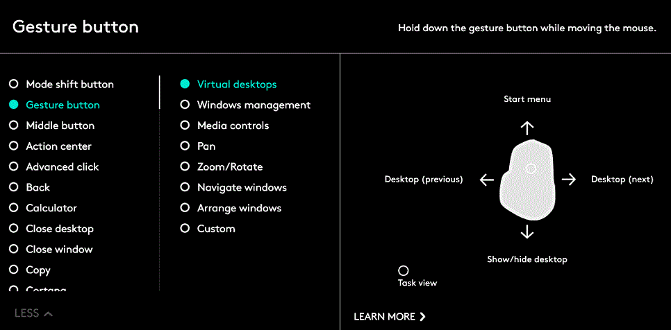

Gestures
Gestures offer an intuitive, easy way to interact with your operating system and applications.
Use gestures to zoom in on documents, browse web pages, rotate images, and much more.
Logitech Options gives you access to a variety of gestures you can perform with the MX Master mouse.
Enable gesture sets
Open the Mouse tab and click the highlighted gesture button.
When the Gesture button is selected in the list of button actions, the gesture sets appear on the right along with a visual guide to the selected set.

A selected set remains active until you select another set.
Note: Gestures are unavailable if the gesture action is unassigned. (You can also assign the gesture button to the thumb button, middle button, and mode shift button.)
Perform gestures
To perform a gesture, hold down the gesture button while moving the mouse left, right, up, or down.
Clicking the gesture button performs an action related to the active gestures.

For more information, see the MX Master Immersion Guide.